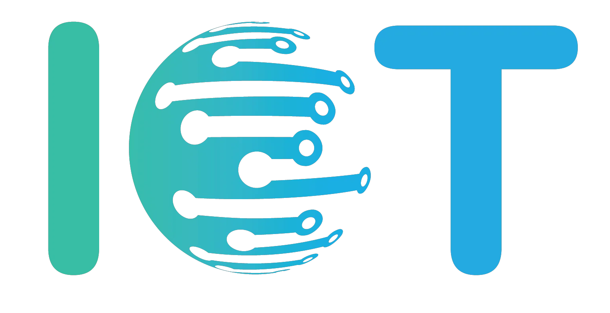

A iniciativa surgiu por meio de um projeto escolar voltado para a Indústria 4.0. Dentre os temas que podíamos abordar, o escolhido foi a Internet das Coisas. Vamos tratar sobre temas e conceitos importantes, e fornecer todo conteúdo para uma digna introdução desse assunto tão imenso. Cada página foi planejada e pensada da melhor forma possível, para fornecer um site completo e simples.
Internet:
- O que é;
- Tipos de redes de computadores;
- Sua origem;
- Como funciona.
Internet das Coisas:
- O que é;
- Quais coisas.
Arquitetura:
- O que é;
- Componentes;
- Aplicando.
Hardware:
- O que é;
- Hardware na IoT;
- Sensores e atuadores;
- Hardware livre.
Software:
- O que é;
- Como fazer;
- Linguagens;
- Origem;
Curiosidades;
Evolução.
Clientes e serviços:
- Arquitetura Cliente-Servidor;
- Servidor Web;
- Publish/Subscribe.
Aplicação:
- Rotas tecnológicas e compromissos;
- Objetos minimalistas;
- Processamento na nuvem;
- Computação em neblina.
Gateways:
- O que é;
- Gateway com múltiplas coisas;
- Redes de sensores e sorvedouros;
- Gateways Móveis.
A maioria do material são textos fornecidos em nossas próprias páginas. Além disso haverão imagens, mapas mentais, vídeos, exemplos, referências e projetos autorais.
O conteúdo super interativo e completo desse site foi retirado e inspirado no da plataforma Code.Iot. É uma pltaforma que oferece cursos onlines, incluindo vídeos explicativos autorias, exercícios pontuados, equipe excelente, comunidade online e projeto final avaliado. Melhor de tudo, com direito a certificado.
Há também a plataforma da Microsoft. Cursos gratuitos, tutoriais, vídeos e muito mais para aprender Internet das Coisas (IoT). É bem completo, entretanto, o conteúdo dos vídeos, por exemplo, encontra-se na língua inglesa. Acesse.